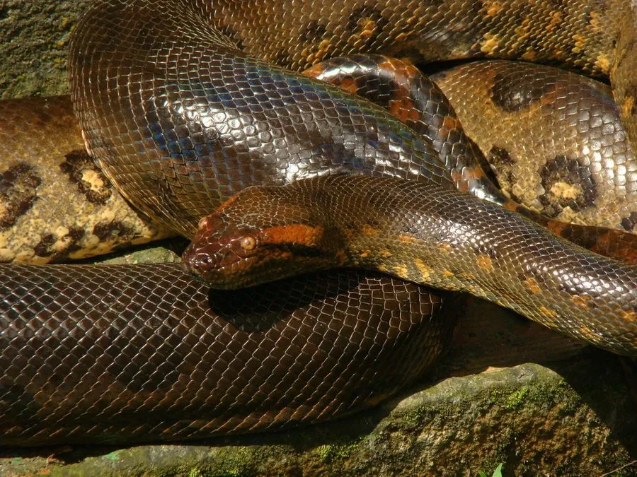

爬行动物 · 动物界
绿水蚺 Eunectes murinus

世界上体重最大的蛇类，生活在南美水域，体长可达 6 米以上，靠绞杀捕食水豚、凯门鳄等猎物。
- 分类
- 门脊索动物门纲爬行纲目有鳞目科蚺科属水蚺属
- 栖息环境
- 南美亚马孙流域的沼泽、河流、湿地与静水水域
- 地理分布
- 南美洲亚马孙流域和奥里诺科河流域
- 保护级别
- IUCN 无危（LC）；CITES 附录 II；非中国原产
物种志
绿水蚺体长 4–6 米，个别记录超过 7 米，体重可达 150 千克以上，是世界上体重最大的蛇类。它身体极为粗壮，头部与颈部区分不明显，眼睛和鼻孔位于头顶，便于在水面下潜伏；体色呈暗绿或橄榄绿，背部有黑色椭圆形斑块，体侧带有黄色或橙色小斑。
它分布于南美洲亚马孙流域和奥里诺科河流域的沼泽、河流与湿地，终生水栖，行动缓慢，常潜伏在水中等待猎物，捕食水豚、凯门鳄、鱼类、水鸟和小型哺乳动物，靠绞杀使猎物窒息。它是卵胎生蛇类，雌蚺妊娠约 6–7 个月后产下 20–40 条幼蚺。绿水蚺无毒，但体型巨大、力量惊人，野生个体性情较凶猛，遇到时应保持距离；目前被列为无危物种。
形态与习性
- 食性水豚、凯门鳄、鱼类、水鸟和小型哺乳动物
- 体长4–6 m，个别记录超过 7 m
- 体重可达 150 kg 以上
- 寿命约 10–20 年
- 繁殖卵胎生，妊娠 6–7 个月，每胎 20–40 条
- 活动节律夜行性，终生水栖
趣味知识
- 绿水蚺是世界上体重最大的蛇类，雌性比雄性大得多。
- 它的眼睛和鼻孔长在头顶，可以只露出水面就能观察四周。
- 绿水蚺是卵胎生蛇类，直接产下活的幼蚺。
生态关系
- 捕食 → 小鼷鹿 森蚺捕食小型哺乳动物